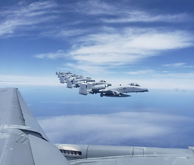

More About Me


In 2011 I started my next life adventure in the Air Force. I got very lucky with the job I was given but I wouldn't find that out or see that until later once I was done with training. I spent a few months in Texas for my military training and then a little for my job. After that I was off to my one and only station in New Jersey. Being a Southern person, I wasn't too excited about this even after spending a year and a half in Virginia. This lifestyle definitely wasn't easy but I really do miss this job. I learned a lot of things, changed even more as a person, met so many different and wonderful folks (not everyone if I'm being honest), and got to travel the world that I would have never seen in my lifetime. After 10 years I decided to call it quits since 8 of those years I was a single parent. I have so many stories and wish I could have created more but my daughter and I were tired and wanted something new. I figured I wanted to finish my Architecture degree but after my 6th and last deployment, I went with coding/programming. I had numerous talks with one of my pilots and made the final decision there that this was the path I wanted to take. Couldn't be more happy about it.